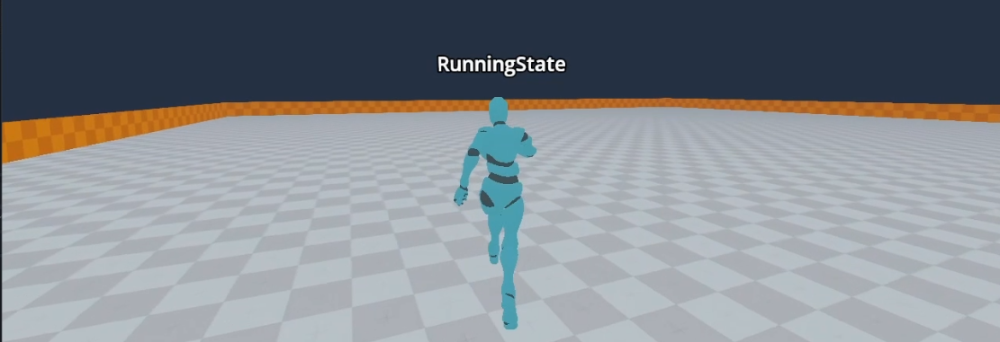
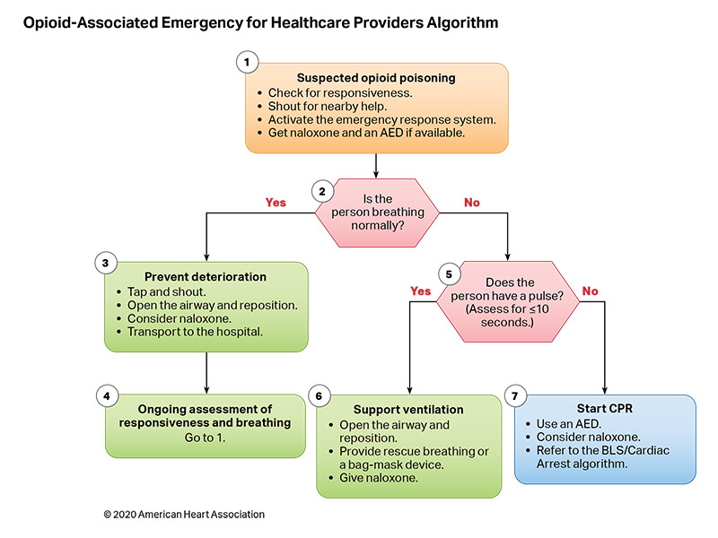

Olá! Eu sou o João e é um prazer tê-lo por aqui! Sou bacharel em Sistemas e Mídias Digitais pela Universidade Federal do Ceará e pretendo iniciar meu Mestrado em Ciências da Computação, também pela UFC, no ano de 2024.
Trabalho profissinalmente como Desenvolvedor Web Fullstack desde 2019. As principais tecnologias com as quais trabalho são C# ( ecossistema .NET ) e Javascript/Typescript ( especialmente Angular ). Mas não somente! Tenho vivência acadêmica em algumas outras tecnologias como Python e outras não necessariamente relacionadas a área de desenvolvimento.
Caso se interesse em saber um pouco mais sobre minha atuação profissional, recomendo minhas descrições de experiências profissionais no
Linkedin.
Apesar do meu viés profissional atual, tenho como objetivo trabalhar na industria de jogos digitais, especialmente na área de programação de gameplay, design e pipeline de ferramentas.
Abaixo você irá encontrar alguns dos projetos em que venho trabalhando. Alguns deles estão disponíveis em meus repositórios públicos do GitHub!
Espero que goste 😁!
Apesar de trabalhar profissionalmente como desenvolvedor web a alguns anos, sei que estou destinado a trabalhar com jogos! Este ano pude começar a realizar alguns protótipos mais ambiciosos na área de jogos digitais. Especiamente em 3D, para começar a ganhar prática nas ferramentas que o mercado solicita. Dediquei-me especialmente no fim do ano a construção de uma gama de protótipos utilizando boas práticas e padrões de projetos no projeto que nomeei de Sandbox (Caixa de Areia).
Nestre projeto, utilizando a Game Engine Godot, em sua versão 4, com a linguagem de programação C#, assets públicos da plataforma Mixamo e Blender para animações e modelagem 3D, foi possível projetar um personagem com movimentação e ponto de vista em terceira pessoa. Busquei utilizar os padrões abordados por Robert Nystrom em game programming patterns como os updates físico e gráfico, máquina de estados finito e componentização. O projeto está em constante evolução e a ideia principal é criar algo que possa realmente ser utilizado em um grande projeto, com as corretas aplicações e otimizações.
No começo do ano busquei por projetos que me pudessem ser desafiadores e diferentes. Fui contratado para participar de um projeto voltado a saúde pública, mais especificamente no auxílio de processos que seguiam protocolos e fluxos bem estabelecidos. A ideia consistia em construir, baseado em um arquivo json ou yaml, um gráfico de fluxo para realização de uma determinada ação relacionada a área médica.
O projeto foi verdadeiramente interessante para mim. A apresentação seria feita em React, oque me deu a oportunidade de aprender uma nova tecnologia. Tive também a grata oportunidade de colocar meus conhecimentos matemáticos em prática novamente, para posicionamento dos gráficos, elaboração de formas geométricas e afins. Devido a outras oportunidades emergentes precisei seguir outro caminho que não se alinhavam com os do projeto.
Neste projeto a ideia era testar algumas bibliotecas e frameworks para entender se elas poderiam atender a propósitos mais complexos. Na época, havia acabado a graduação e estava procurando algo mais profundo para fazer em paralelo ao trabalho. Escolhi fazer uma aplicação com um pouco de Matemática para testar a performance da biblioteca javascript Pixi Js. Aproveitei para experimentar também o framework Electron, responsável por viabilizar aplicações web em contextos de desktop. Na aplicação circulos são gerados e movimentados aleatoriamente pela tela. Estes tem inicialmente a cor branca mas ao colidirem uns com os outros as cores mudam, resultando no efeito demonstrado na imagem.
Tanks Vs Spiders é um jogo tiro top down com elementos de estratégia em tempo real. Foi um projeto feito na Godot Engine 3.5 utilizando-se de sua linguagem de programação própria GD Script. Suas mecânicas e estéticas foram inspiradas em jogos de minha infância como Battle City e Phanthom Spider. No jogo é possível controlar um tanque de guerra e combater aranhas gigantes alienígenas mutantes enquanto ganha poderes especiais para lutar.